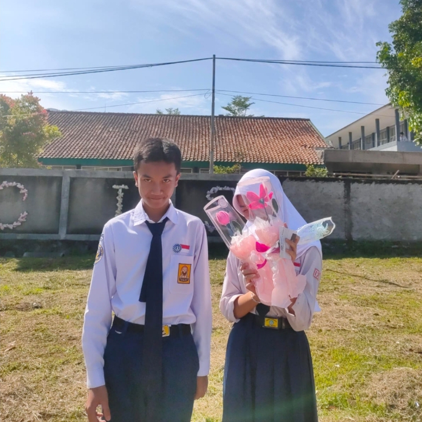

Adwa Reqilla Efyan
Pemula saat fotbar
A Sorrowful Reunion
Reality Club
Ini bukan halaman biasa. Ini cuma tempat kecil untuk perasaan yang tidak pernah benar-benar pergi.
Aku tidak tahu kapan semuanya berubah, tapi yang aku tahu, namamu masih sama di hati aku.
Kalau suatu hari kamu baca ini, aku cuma mau kamu tahu satu hal: perasaan ini tidak pernah dibuat-buat.

Tidak semua hal harus dimiliki. Ada yang cukup disimpan, diingat, dan didoakan diam-diam.
— Adwa